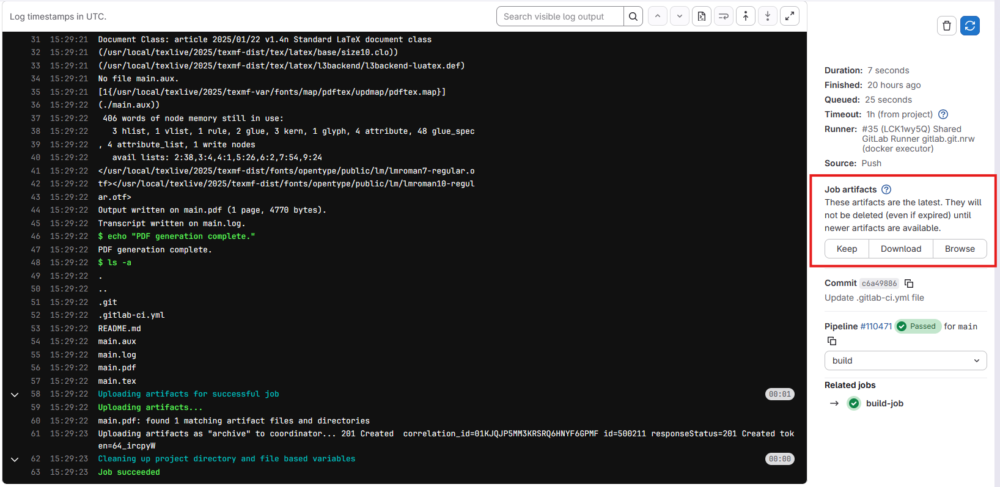
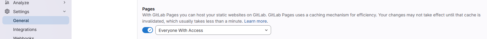
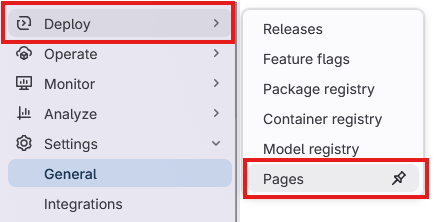
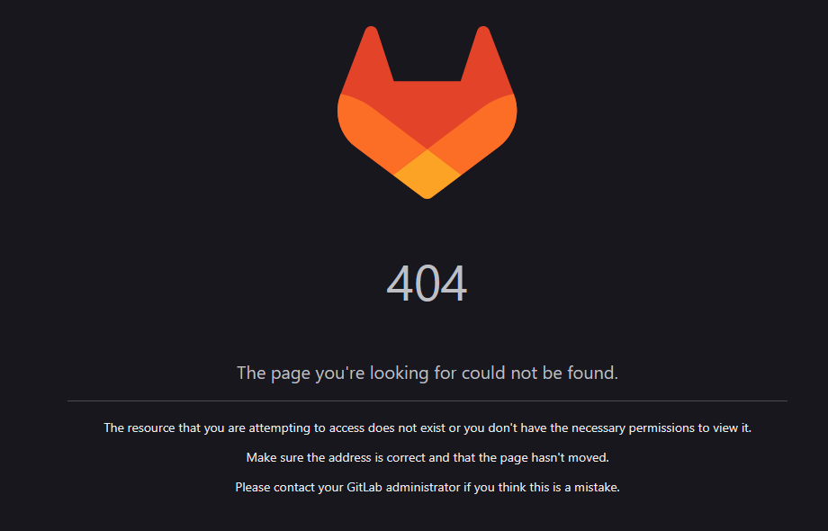

Using CI/CD to Build and Deploy a LaTeX Document
Last updated on 2026-03-04 | Edit this page
Estimated time: 12 minutes
Overview
Questions
- How can we use CI/CD to automate the process of building and deploying a LaTeX document?
- What are the benefits of using CI/CD for this kind of task?
- How can we run LaTeX commands in our CI/CD pipeline?
Objectives
- Create a CI/CD pipeline that builds a LaTeX document from a source file and deploys the output PDF to a static URL.
Opening up CI/CD: Docker Images
In the previous episode we created a CI/CD pipeline that ran a few
stages and a few jobs, but those jobs didn’t actually do anything, they
just printed out text to the console. You may have tinkered around with
the jobs a bit and found that there were some commands that worked in
the pipeline, like echo and ls, but when you
tried to run a command like git --version the job fails
with an error telling us that the command is not found.
This is because each job in the CI/CD pipeline runs in a Docker container, and that container only contains a limited set of software. The upside of this is that there are a huge variety of Docker images available that contain different software, and we just have to tell our jobs which image we want to use.
Docker images are like pre-built, software only operating systems. You can think of it like a small virtual machine that comes pre-built with a specific set of software. When you run a job in CI/CD, it starts up this virtual machine, runs the commands in the job, and then shuts down.
Selecting a different Docker Image
The default Docker image that CI/CD uses is
ubuntu:latest, which is a very basic image that only
contains the Ubuntu operating system and a few basic utilities. If we
want to run commands that aren’t found in that image, we can select a
different image that does.
In the last exercise in the previous episode, we added a job that
tried to run git --version, but it failed because the
git command wasn’t found. We can tell CI/CD that, for this
job, we want to use a different docker image:
YAML
build-job: # This job runs in the build stage, which runs first.
stage: build
image:
name: alpine/git:latest # Use a simple git container using alpine linux
entrypoint: [""] # Override the default entrypoint to allow us to run arbitrary commands
script:
- echo "Compiling the code..."
- echo "Compile complete."
- ls -a
- echo "The commit SHA is ${CI_COMMIT_SHA}."
- git --versionThe image is called “alpine/git:latest”. The first part, “alpine/git”, is the name of the image and the second part, “latest”, is the tag, which specifies the version of the image to use. If we use the “latest” tag, it will always pull the most recent version of the image from Docker Hub. If we use a specific tag, e.g. “alpine/git:2.52.0”, it will pull that specific version of the image.
Pulling a specific version of the image is called “pinning”, and is generally recommended for CI/CD pipelines, because it ensures that your pipeline will always run with the same version of the software, even if a new version is released that might have breaking changes.
When we check the job details for this pipeline, we can see that the
job is now running a different Docker image, and the
git --version command works successfully:

The CI/CD pipeline uses Docker Hub to pull images from, so we can use the Docker Hub website to search for images that contain the software we want to use. We can also create our own Docker images if we need to, but there are a lot of pre-built images already available.
Building a Basic LaTeX Document
To start with, we need to have a LaTeX document to build. Let’s
create a simple LaTeX document called main.tex in the root
of our repository with the following content:
We want to use CI/CD to automatically build this LaTeX document into
a PDF file, so we’ll need to use a docker image that contains LaTeX.
Searching for “latex” on Docker Hub gives us a few options, and for this
workshop we’ll use the texlive/texlive image, which
contains the TeX Live distribution of LaTeX.
We’ll update our CI/CD pipeline to use this image, and to run the command to build our LaTeX document:
YAML
build-job: # This job runs in the build stage, which runs first.
stage: build
image:
name: texlive/texlive:latest # Use a TeX Live image that contains LaTeX
script:
- echo "Generating PDF from LaTeX source..."
- lualatex main.tex
- echo "PDF generation complete."
- ls -aThe pipeline will run automatically after each of these commits.
Checking the job details for the build job of the latest pipeline, we
can see that the lualatex main.tex command runs
successfully and generates not only the main.pdf file, but
also a few auxiliary files that LaTeX generates during the build
process:

Artifacts
Ok, so the command to build the LaTeX document ran successfully, but how do we get the generated PDF file somewhere we can look at it?
We can use the “artifacts” feature of CI/CD to specify that we want
to save the generated PDF file as an artifact of the job. This means
that after the job runs, we can download the generated PDF file from the
CI/CD interface. We can specify this in our .gitlab-ci.yml
file like this:
YAML
build-job: # This job runs in the build stage, which runs first.
stage: build
image:
name: texlive/texlive:latest # Use a TeX Live image that contains LaTeX
script:
- echo "Generating PDF from LaTeX source..."
- lualatex main.tex
- echo "PDF generation complete."
- ls -a
artifacts:
paths:
- main.pdfThis tells CI/CD that we specifically want to save the
main.pdf file as an artifact of this job. After this job
runs, you should be able to see a new section in the job details page
called “Job artifacts”:

Clicking on the “Browse” button will show us a list of files that the
job saved as artifacts. Since we specifically told it in the
.gitlab-ci.yml file to only save the main.pdf
file, that’s the only file that will be listed here. Clicking on the
file will let us preview it in the browser, or download it to our
computer.
We can preview this file because it GitLab has a built-in PDF viewer. If we were to save a different type of file as an artifact, we might not be able to preview, but would only be able to download it.
Pages
While it’s nice that we can download the generated PDF file, it would be even nicer if we could send a url to someone so that they could view our pdf without having to log into GitLab and view a specific job. We can do this with the “pages” feature of GitLab CI/CD, which allows us to deploy static files to a public URL.
We need to update a couple of settings to make this easier for us. First, we need to tell GitLab that the Pages feature is for everyone, not just the project owner. Navigate to the Settings > General page in the sidebar, and scroll down to the “Visibility, project features, permissions” section. Under the “Pages” feature, make sure the toggle is turned on and that “Everyone with access” is selected:

Next, let’s update our .gitlab-ci.yml file to deploy the
generated PDF file to GitLab Pages. GitLab CI/CD has a special job for
deploying to Pages, which is called pages. We can add this
job to our pipeline like this:
YAML
pages:
stage: deploy
script:
- echo "Deploying to GitLab Pages..."
- mkdir -p public # Create the public directory if it doesn't exist
- mv main.pdf public/ # Move the generated PDF file to the public directory
artifacts:
paths:
- public # Save the public directory as an artifact so that it can be deployed to PagesMuch of this we’ve seen before, but there are a couple of things to take note of here.
- The job must be called
pagesin order for GitLab to recognize it as a Pages deployment job (the stage name can be anything, but the job name must bepages). - We need to move the generated PDF file to a directory called
public, as this is the directory that GitLab Pages expects to serve files from. (We also need to ensure that this directory exists, which is why we have themkdir -p publiccommand). - Finally, we need to save the
publicdirectory as an artifact of this job.
After we commit this change, the pipeline will run. You might notice
however that there’s a job in our pipeline that we didn’t write called
“pages:deploy”. This is a special job that GitLab automatically creates
as a result of having a job called pages in our pipeline.
This job is responsible for taking the artifacts from the
pages job and deploying them to GitLab Pages.
Next we want to view our page. In the sidebar, navigate to “Deploy” > “Pages”:

This page gives us an overview of our pages deployment click on the “Visit website” button and…

What’s going on here? Why are we getting a 404 error when we try to
visit our page? GitLab Pages is serving the public folder - if we had a
file in this directory called “index.html”, then this would be used as
the homepage of our site. However, since the only file in our public
directory is main.pdf, we have to specify this in the url.
Add main.pdf to the end of the url and try visiting it
again.
Depending on your GitLab deployment, the url for your pages site might have some extra letters and numbers in it. This is one way of ensuring that the url is unique for each pipeline run, but ideally we want just one url. In the Deploy > Pages settings page, there is a tab called “Domains & settings”. In this tab there is a checkbox called “Use unique domain”. If you uncheck this box, your pages site will have a fixed url that doesn’t change with each pipeline run.
Challenge 1: Update the LaTeX document
Update the main.tex file with some additional text in
between the \begin{document} and
\end{document} tags, e.g. add a new paragraph with some
text. If you know some LaTeX, you can also try adding some additional
formatting, e.g. make some text bold or italic, or add a section
heading.
Commit the changes to the file and let the pipeline run. Refresh the page for your GitLab Pages site after the pipeline is finished running. Did the changes you made to the LaTeX document show up on the page?
You may have to wait a minute after the pipeline finishes running for the changes to show up. If you refresh the page after a minute and still don’t see the changes, try forcing a refresh on the page. This will vary depending on your browser:
- Chrome:
Ctrl + Shift + Ron Windows orCmd + Shift + Ron Mac - Firefox:
Ctrl + F5on Windows orCmd + Shift + Ron Mac - Safari:
Cmd + Option + Ron Mac - Edge:
Ctrl + Shift + Ron Windows orCmd + Shift + Ron Mac
Challenge 2: Add an additional file to the public directory
We also have in our repository a README.md file. This file is not
currently being deployed to our Pages site, but we can easily change
that by adding a command to our pages job.
Update the pages job in your .gitlab-ci.yml
so that the README.md file is also deployed to the pages
site.
You will need to move the README.md file to the
public directory, just like we did with the
main.pdf file.
YAML
pages:
stage: deploy
script:
- echo "Deploying to GitLab Pages..."
- mkdir -p public # Create the public directory if it doesn't exist
- mv main.pdf public/ # Move the generated PDF file to the public directory
- mv README.md public/ # Move the README.md file to the public directory
artifacts:
paths:
- public # Save the public directory as an artifact so that it can be deployed to PagesChallenge 3: Add a landing page to the Pages site
Earlier we found that when we navigated to the url for our Pages
site, we got a 404 error because there was no index.html
file in the public directory. We can fix this by adding an
index.html file when we build our Pages site.
Here is a very simple index.html file that you can
use:
HTML
<!DOCTYPE html>
<html lang="en">
<head>
<meta charset="UTF-8">
<meta name="viewport" content="width=device-width, initial-scale=1.0">
<title>My LaTeX Document</title>
</head>
<body>
<h1>Links</h1>
<ul>
<li><a href="main.pdf">View the PDF document</a></li>
<li><a href="README.md">View the README file</a></li>
</ul>
</body>
</html>Save the above HTML code in a file called index.html in
the root of your repository. Then, update the pages job in
your .gitlab-ci.yml file to move this
index.html file to the public directory, just
like we did with the main.pdf and README.md
files:
YAML
pages:
stage: deploy
script:
- echo "Deploying to GitLab Pages..."
- mkdir -p public # Create the public directory if it doesn't exist
- mv main.pdf public/ # Move the generated PDF file to public
- mv README.md public/ # Move the README.md file to public
- mv index.html public/ # Move the index.html file to public
artifacts:
paths:
- public # Save the public directory as an artifact- We can use CI/CD to automate the process of building and deploying a LaTeX document.
- Each job in the CI/CD pipeline runs in a Docker container, and we can specify which Docker image to use for each job.
- We can use the “artifacts” feature of CI/CD to save files generated by a job and make them available for download.
- We can use the “pages” feature of GitLab CI/CD to deploy static files to a public URL.